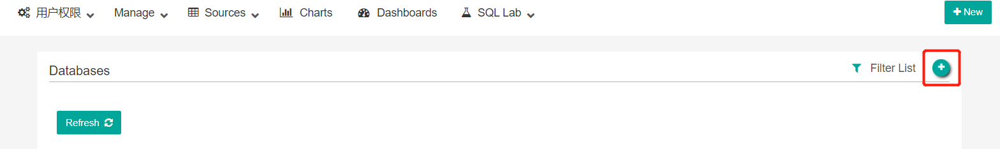
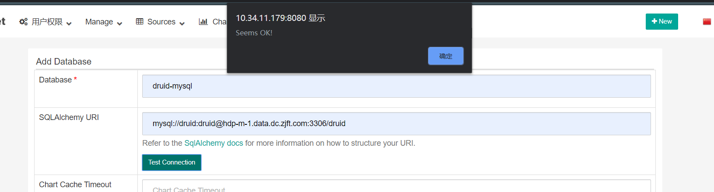

# 操作系统
# 软件依赖
- Python3.6~
- Pip~
- Setuptools~
# 实验环境
- Windows10
- python3.68
- pip~
- setuptools~
# 什么是 SuperSet
Superset 是 Airbnb 开源的大数据可视化平台，其特性包括：
・backend 支持几乎所有主流的数据库
・支持复杂的权限控制和管理 (OpenId, OAuth 等)，满足企业内部不同部门人员对数据的权限要求
・丰富的可视化展示，支持自定义创建 dashboard，可分享
・可扩展、细粒度的数据库权限控制，满足不同层级人员对数据库权限的要求
・数据的展示完全可控，可自定义展示字段、聚合数据、数据源等
・深度集成 Druid.io
# SuperSet 安装
Superset 已弃用对 Python 的 2.* 支持，仅支持～=3.6 利用 Python 的新功能并减少支持以前版本的负担。我们针对来运行我们的测试套件 3.6，但 3.7 也完全受支持
# 创建 Python3 虚拟环境
python3 自带 venv 模块创建虚拟环境
- 创建虚拟环境
cd /opt/python3 -m venv venv
- 激活虚拟环境
. /opt/venv/bin/activatevenv\Scripts\activate
激活虚拟环境后命令行将变为（venv）
# 安装依赖
# Debian 和 Ubuntu
以下命令将确保已安装必需的依赖项：
sudo apt-get install build-essential libssl-dev libffi-dev python-dev python-pip | |
libsasl2-dev libldap2-dev |
Ubuntu 18.04 如果在 Ubuntu 18.04 LTS 上默认将 python3.6 和 python2.7 一起安装，请同时运行以下命令：
sudo apt-get install build-essential libssl-dev | |
libffi-dev python3.6-dev python-pip libsasl2-dev libldap2-dev |
# 其他 linux 系统:
sudo yum upgrade python-setuptools | |
sudo yum install gcc gcc-c++ libffi-devel python-devel python-pip python-wheel | |
openssl-devel cyrus-sasl-devel openldap-devel |
# Mac
Mac OS X 如果可能，您应该升级到最新版本的 OS X，因为该版本更有可能解决问题。您可能需要适用于已安装的 OS X 版本的最新版本的 XCode。还应该安装 XCode 命令行工具：
xcode-select --install |
# Windows
目前尚不正式支持 Windows，但如果要尝试使用 Windows，请下载 get-pip.py 并运行，可能需要管理员权限。然后运行以下命令：
pip install cryptography |
# 开始安装
# 1. 安装 superset
从阿里云镜像里下载速度会快很多，等待 pip 安装完成
pip install apache-superset -i https://mirrors.aliyun.com/pypi/simple/ |
如果是 windows，下面的操作都必须在包的 bin 目录下进行
cd yourPath/python3.6/site-packages/superset/bin |
命令前面加上 python，例如
python superset init |
❌如果 windows 在安装 Python-geohash 出现如下报错
Running setup.py bdist_wheel for python-geohash ... error |
请到这里下载相应的安装包，如果是 Python3.7，则文件名为 python_geohash‑0.8.5‑cp37‑cp37m‑win_amd64.whl
然后进入文件目录，执行
pip install python_geohash‑0.8.5‑cp37‑cp37m‑win_amd64.whl |
# 2. 初始化数据库
superset db upgrade |
❌如果是 windows，出现如下错误
ImportError: cannot import name 'ImmutableDict' from 'werkzeug' |
请将 werkzeug 升级到 0.15 以上
# 3. 创建管理员用户
fabmanager create-admin --app superset | |
#按提示输入 | |
#用户名:admin | |
#姓:admin | |
#名:admin | |
#邮箱:admin@zjft.com | |
#密码:admin | |
#确认密码:admin |
# 4. 导入样例数据 (可跳过)
导入世界卫生组织的样例数据（下载失败，貌似要翻墙）
superset load_examples |
# 5. 系统初始化
superset init |
# 6. 启动服务
superset 启动的命令为
superset run -h host -p port |
其中 host 为 superset 的 IP 地址，port 为端口号
Linux
需要开放相关端口，默认是 8080
iptables -I INPUT -p tcp --dport 8080 -j ACCEPT |
如果开启了防火墙，要打开防火墙的 8080 端口
firewall-cmd --zone=public --add-port=8080/tcp –permanent | |
firewall-cmd –reload |
查看防火墙的 8080 端口是否开启
firewall-cmd --query-port=8080/tcp |
启动 superset 后台服务，-h 0.0.0.0 (可供局域网访问),-p 端口并把日志写入 superset.log 文件
nohup superset run -h 0.0.0.0 -p 8080 --with-threads --reload --debugger | |
>superset.log & |
Windows
python superset run -h 0.0.0.0 -p 8080 --with-threads --reload --debugger |
- 浏览器访问 http://IP:8080/
# SuperSet 配置数据源
- 服务器需要安装好你所使用的数据库和相关驱动
database pypi package SQLAlchemy URI prefix Amazon Athena pip install "PyAthenaJDBC>1.0.9" awsathena+jdbc:// Amazon Athena pip install "PyAthena>1.2.0" awsathena+rest:// Amazon Redshift pip install sqlalchemy-redshift redshift+psycopg2:// Apache Drill pip install sqlalchemy-drill For the REST API:drill+sadrill:// For JDBC drill+jdbc:// Apache Druid pip install pydruid druid:// Apache Hive pip install pyhive hive:// Apache Impala pip install impyla impala:// Apache Kylin pip install kylinpy kylin:// Apache Pinot pip install pinotdb pinot+http://CONTROLLER:5436/ query?server=http://CONTROLLER:5983/ Apache Spark SQL pip install pyhive jdbc+hive:// BigQuery pip install pybigquery bigquery:// ClickHouse pip install sqlalchemy-clickhouse Elasticsearch pip install elasticsearch-dbapi elasticsearch+http:// Exasol pip install sqlalchemy-exasol exa+pyodbc:// Google Sheets pip install gsheetsdb gsheets:// IBM Db2 pip install ibm_db_sa db2+ibm_db:// MySQL pip install mysqlclient mysql:// Oracle pip install cx_Oracle oracle:// PostgreSQL pip install psycopg2 postgresql+psycopg2:// Presto pip install pyhive presto:// Snowflake pip install snowflake-sqlalchemy snowflake:// SQLite sqlite:// SQL Server pip install pymssql mssql:// Teradata pip install sqlalchemy-teradata teradata:// Vertica pip install sqlalchemy-vertica-python vertica+vertica_python:// Hana pip install hdbcli sqlalchemy-hana or pip install superset[hana] hana:// - 进入首页，输入配置好的用户名，密码
- 进入数据源
- 增加数据源
 - 配置数据源
以 druid 的 mysql 数据库为例，填好数据库名和数据库的 URI (SQLAlchemy URI)。点击 Test Connetion 测试数据库是否可用，没问题就点击保存
 - 创建成功


# SuperSet 使用 Druid
- 服务器需要安装 Druid 的 python 包
pip install pydruid - 创建 Druid 集群
- 新建一个 Druid 集群
- 填入集群的配置信息，Cluster 选项可以随意填，点击保存
- 打开 Druid 集群管理页面，刚创建的集群的元数据是为 None。
- 手动刷新 Druid 的元数据
- 刷新成功后会自动创建一个 Druid Datasources（数据源）。如果失败了则检查 Druid 的配置有没写错
- 返回 Druid cluster 页面
- 元数据已经刷新
# SuperSet 生成图表
- 新建一个图表
- 选择刚才创建好的 Druid 数据源，默认是选择 table，你也可以选择其他的图表，点击创建
- 之后会自动跳转到编辑界面
- 完成后点击 save，这里可以选择是否添加到仪表盘，这里选择保存并转到仪表盘

- 进入仪表盘
- 可以看见新创建的图表了

# SuperSet API
# API 参数总览
| parameter name | description | type |
|---|---|---|
| datasource | 数据源 | string |
| viz_type | 图表类型 | int |
| granularity_sqla | 时间字段 | string |
| time_grain_sqla | 时间粒度 | string |
| time_range | 时间范围 | datetime |
| entity | 实体，每个图表类型这个值不一样 | string |
| country_fieldtype | 国家字段类型（地图图表特有参数） | string |
| adhoc_filters | 筛选字段 | string |
| show_bubbles | 是否在地图展示数量大于 max_bubble_size 的国家 | boolean |
| max_bubble_size | int | |
| standalone | string | |
| height | 图表高度 | int |
| width | 图表宽度 | int |
| aggregate | 统计方法 | string |
| column:column_name | 数据源的字段名 | string |
| column:description | 数据源的描述 | string |
| column:expression | ||
| column:filterable | 是否启用过滤 | boolean |
| column:groupby | 是否启用分组 | boolean |
| column:id | 数据源字段 ID | int |
| column:is_dttm | boolean | |
| column:optionName | string | |
| column:python_date_format | python 时间格式 | string |
| column:type | 字段类型 | string |
| column:verbose_name | string | |
| expressionType | string | |
| fromFormData | string | |
| hasCustomLabel | 是否使用自定义标题 | boolean |
| label | 数据标题 | string |
| optionName | string | |
| sqlExpression | 查询有效期 | string |
# Chart API
- URL: /superset/explore/
- parameter: form_data
- method: GET
- 引用生成好的图表 (以地图为例)
打开已经创建好的图表，点击右上角的 <> 按钮，把 html 放到自己的项目就可以了，适用于固定参数图表 - 通过 API 获取，适用于动态参数图表
其中 form_data 后面是图表的参数
上面 API 转译过来就是
也可以在图表中获取http://10.34.11.179:8080/superset/explore/? form_data={ "datasource": "3__table", "viz_type": "world_map", "slice_id": 57, "url_params": {}, "granularity_sqla": "last_update_at", "time_grain_sqla": null, "time_range": "2010-01-01T00:00:00+:+2020-01-16T00:00:00", "entity": "country", "country_fieldtype": "name", "metric": { "aggregate": "COUNT_DISTINCT", "column": { "column_name": "hostname", "description": null, "expression": null, "filterable": true, "groupby": true, "id": 7, "is_dttm": false, "optionName": "_col_hostname", "python_date_format": null, "type": "VARCHAR(300)", "verbose_name": null }, "expressionType": "SIMPLE", "fromFormData": false, "hasCustomLabel": false, "label": "COUNT_DISTINCT(hostname)", "optionName": "metric_kjwkqwqukjd_5o8d3equvv5", "sqlExpression": null }, "adhoc_filters": [], "row_limit": 10000, "show_bubbles": true, "secondary_metric": { "aggregate": "COUNT_DISTINCT", "column": { "column_name": "hostname", "description": null, "expression": null, "filterable": true, "groupby": true, "id": 7, "is_dttm": false, "optionName": "_col_hostname", "python_date_format": null, "type": "VARCHAR(300)", "verbose_name": null }, "expressionType": "SIMPLE", "fromFormData": false, "hasCustomLabel": false, "label": "COUNT_DISTINCT(hostname)", "optionName": "metric_n3idgryyr4a_hzn2nydg3gw", "sqlExpression": null }, "max_bubble_size": "35" } & standalone = true & height = 400
# Data API
依靠的sql lab模块的接口
- URL: superset/sql_json/
- method: POST
请求参数返回结果{client_id: "o5HDMW18", database_id: 2, json: true, runAsync: false,…}
client_id: "o5HDMW18"
database_id: 2
json: true
runAsync: false
sql: "SELECT "ID",↵ "UserId",↵ "Content","CreateTime", "Active","AppId",
"Recommend","Like","UnLike","Funny","Label","Rate"
FROM business.game_evaluation LIMIT 100"sql_editor_id: null
tab: ""
select_as_cta: false
}{query_id: 28, status: "success",…}
query_id: 28
status: "success"
data: [{ID: 4, MarkId: 5, UserId: 34, Active: false,
CreateTime: "2020-01-09T14:06:42.352546+08:00"},…]
columns: [{name: "ID", agg: "sum", type: null, is_date: false, is_dim: false},…]
selected_columns: [{name: "ID", agg: "sum", type: null,
is_date: false, is_dim: false},…]
expanded_columns: []
query: {changedOn: "2020-02-11T17:22:09.128505", changed_on:
"2020-02-11T17:22:09.128505", dbId: 2, db: "npc",…}